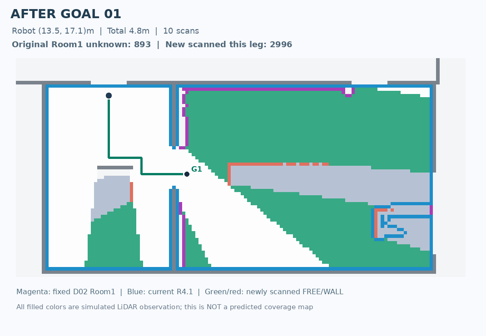
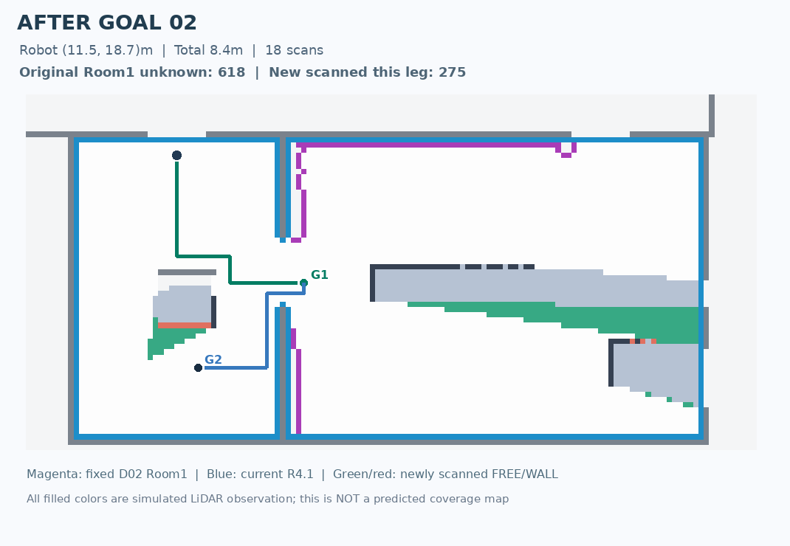
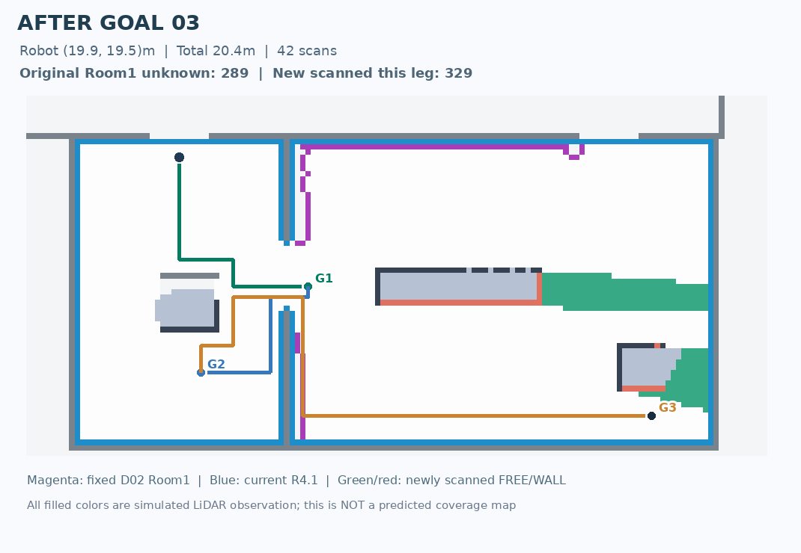
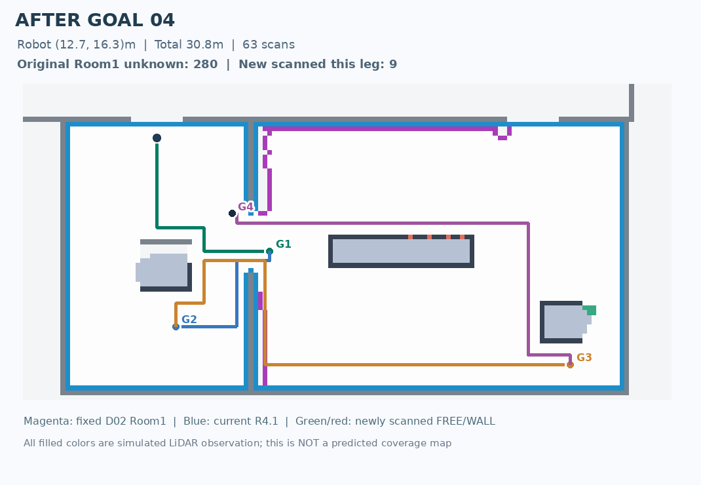
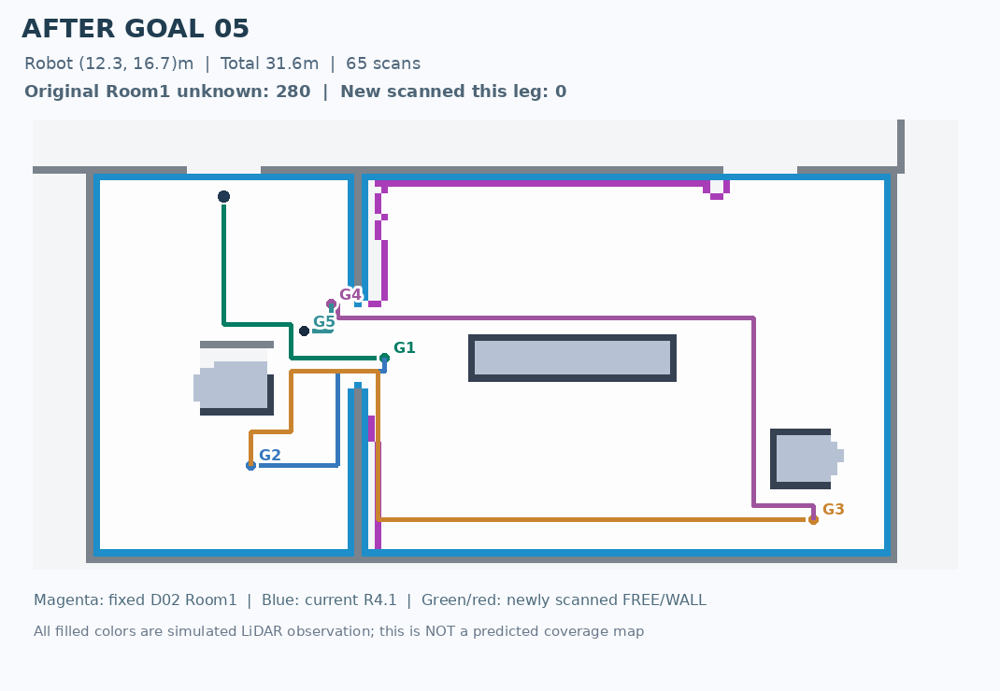
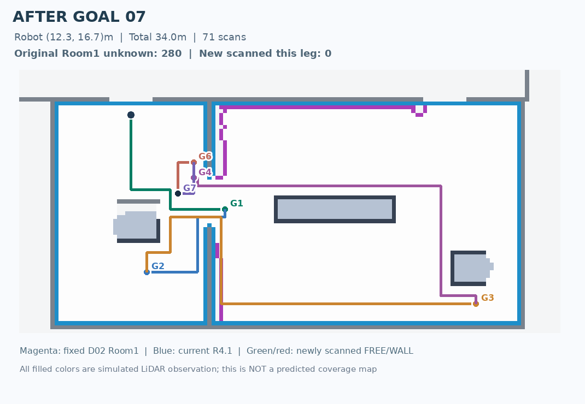
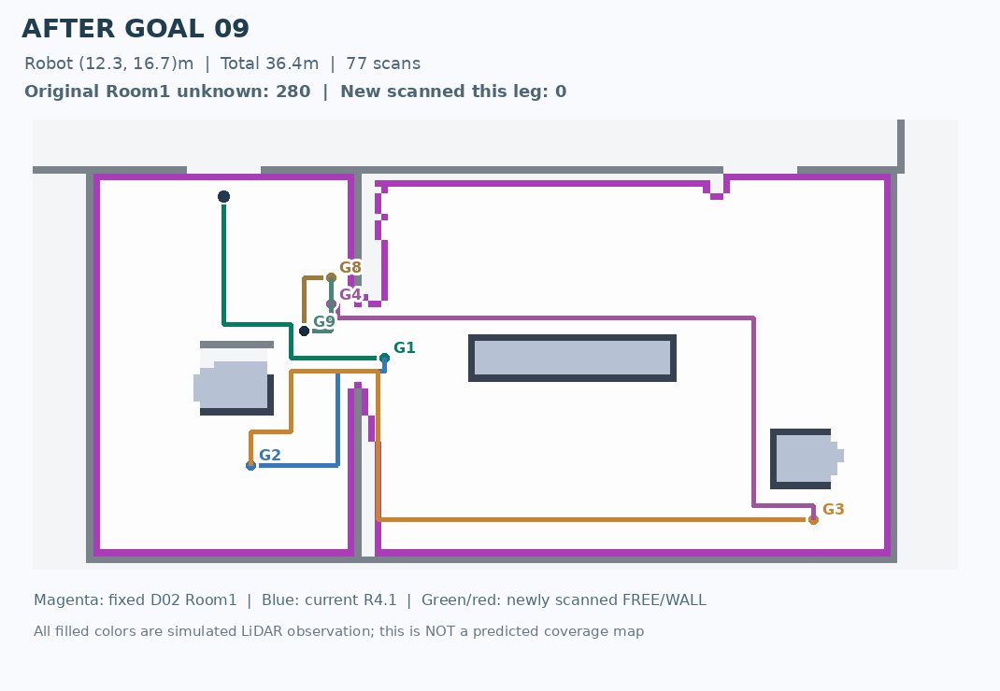
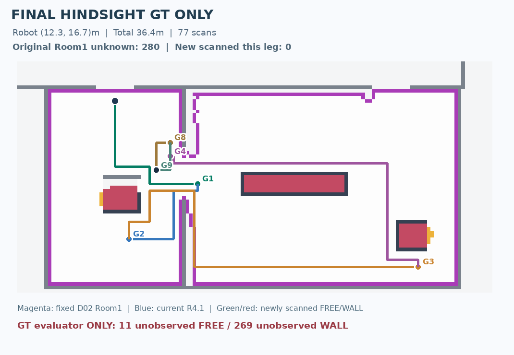

D02 ORIGINAL

Robot sử dụng goal D02 do G2-R3 tự chọn, quét LiDAR từ môi trường GT ẩn, sau mỗi goal tính lại LaMa ba mô hình, Room Node V4-R4.1 và lập lại chuỗi mới. Không dùng GT để chọn goal. Bản đồ GT trong phần đánh giá cuối chỉ xuất hiện sau khi quá trình chạy kết thúc.
Stopped: STALLED_NO_NEW_EVIDENCE · 9 goal(s) · 36.4 m · 77 scans · original room unknown left 280.
| # | Goal (x,y)m | Đường tích lũy | Unknown trong Room1 cũ | Next G2 plan |
|---|---|---|---|---|
| 1 | [13.5, 17.1] | 4.8 m | 893 | [[11.5, 18.7], [19.9, 19.5]] |
| 2 | [11.5, 18.7] | 8.4 m | 618 | [[19.9, 19.5], [11.9, 16.3], [20.7, 14.7]] |
| 3 | [19.9, 19.5] | 20.4 m | 289 | [[12.7, 16.3]] |
| 4 | [12.7, 16.3] | 30.8 m | 280 | [[12.3, 16.7], [12.3, 17.1]] |
| 5 | [12.3, 16.7] | 31.6 m | 280 | [[12.7, 15.9], [12.7, 17.1]] |
| 6 | [12.7, 15.9] | 32.8 m | 280 | [[12.3, 16.7], [12.3, 17.1]] |
| 7 | [12.3, 16.7] | 34.0 m | 280 | [[12.7, 15.9], [12.7, 17.1]] |
| 8 | [12.7, 15.9] | 35.2 m | 280 | [[12.3, 16.7], [12.3, 17.1]] |
| 9 | [12.3, 16.7] | 36.4 m | 280 | [] |








Giới hạn: raycast 2D trên GT raster, không phải LiDAR MapEx source-native; replanning sau mỗi goal chứ không phải mỗi scan; chưa chứng minh an toàn vật lý hay toàn cục tối ưu.